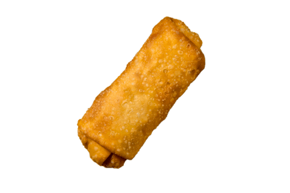

COOKING RECIPES
料理レシピ
CLASSIC LUMPIANG TOGE
HISTORY
Lumpiang toge, also known as mung bean sprout spring roll, is a traditional Filipino snack that traces its roots to Chinese spring rolls introduced to the Philippines by early Chinese immigrants. Unlike the more elaborate meat or seafood-filled lumpia, classic lumpiang toge focuses on simplicity and freshness, using mung bean sprouts, garlic, carrots, and sometimes shrimp or pork lightly sautéed and wrapped in a thin spring roll wrapper.
It became popular in the 20th century as an affordable, healthy, and easy-to-make snack or appetizer, often served with a garlic- vinegar or sweet sauce. Today, it’s cherished for its crunchy texture, light flavor, and versatility, embodying the Filipino adaptation of a Chinese culinary tradition.

“The OG hero of street-food battles — Classic Lumpiang Toge! Crispy on the outside, veggie power on the inside, delivering that ultimate crunch attack every bite.”
INGREDIENTS
- 1 lb ground pork
- 1 cup shredded carrots
- 1 cup cabbage, chopped
- 2 cloves garlic, minced
- 1/4 cup soy sauce
- Spring roll wrappers
- Oil for frying
PROCEDURE
1. Mix all ingredients together in a bowl.
2. Place a spoonful of the mixture in a wrapper and roll it up.
3. Heat oil in a pan and fry the lumpia until golden brown.
4. Serve hot and enjoy!